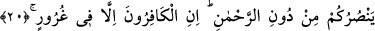

ALLAH SİZE VERDİĞİ
RIZKI KESİVERSE
19. Üstlerinde kanatlarını aça-kapata uçan kuşları (hiç) görmediler mi? Onları
(havada) rahmân olan Allah’tan başkası tutmuyor. Şüphesiz O her şeyi
görmektedir.
20. Rahmân olan Allah’a karşı şu size yardım edecek askerleriniz hani kimlerdir?
İnkârcılar ancak derin bir gaflet içinde bulunmaktadırlar.
21. Allah size verdiği rızkı kesiverse, size rızık verebilecek olan kimdir? Hayır,
onlar azgınlık ve nefrette direnip durmaktadırlar.
22. Şimdi (düşünün bakalım), yüz üstü kapanarak yürüyen mi (varılacak) yere
daha iyi erişir, yoksa doğru yolda düzgün yürüyen mi?
“Üstlerinde kanatlarını aça kapata uçan kuşları (hiç) görmediler mi?” Yâni gâfil
olup da bunları hiç görmediler mi? Burada geçen “ru’yet” kelimesi gözle görmek
anlamınadır. Çünkü “ila” harf-i cerri ile geçişli olmaktadır. Buna karşılık kalp
vâsıtasıyla görme fiiline gelince bu fiilin geçişliliği “fi” harfi cerriyle yapılır. Âyetin
metninde yer alan “tayr” kelimesi, kuş cinsinin bütün türlerine verilen genel bir isimdir.
Bu kelime ile ifâde edilen havada uçabilen kanatlı bütün kuşlardır. “Tayr” ve “tâir”,
tıpkı “rakb” ve “râkib” kelimelerinde olduğu gibi aslında çoğul anlam ifâde etmektedir.
Ya da kelimenin masdarı kendi cinsine isim kılınmıştır. Eğer böyle takdir edecek
olursak, mânâ itibariyle çokluk ifâde etmesinden dolayıdır. Kelime “sâffât” kelimesiyle
sıfatlanmıştır Müfredat’ın ifâdesine göre ise bu kelime “tâir” kelimesinin çoğuludur.
“__WORD__ /Fevkahum” lafzının, “görmediler mi” fiilinin zarfı olması mümkün olduğu gibi,
“tayr” kelimesinden hâl olması da mümkündür. Bu takdirde âyetin mânâsı, “üzerlerinde
kanatlarını açıp kapattıkları hâlde uçan kuşları hiç görmediler mi?” demek olur.
“__WORD__ /Sâffât” kelimesi “tayr” kelimesinden hâldir. Arapçada bu kelimenin masdarı
olan “saff” insan, ağaç ve benzeri nesneleri doğru bir hat üzerinde hizaya getirmek